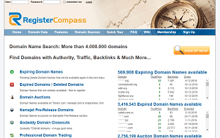
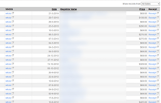

オールド・中古ドメインの探し方
こちらの方法は2010年前後に有効でしたが、ページランクが更新されなくなったため、現在では意味がなくなっているかと思います。
マニュアルでのオールドドメインの探し方
肝心のその数十程度のドメインについてですが、マニュアルで探す方法とツールを使って探す方法の２種類が存在します。
マニュアルで探す方法としては、1日にドロップされるドメインリスト（pending delete list）を取得してきてページランクでふるいにかけるとよいでしょう。レジストリが配布するリストをレジストラが公開しているので、できるだけ正確なものを入手しましょう。
pending delete listの例）
www.namejet.com/Pages/Downloads.aspx
作業の自動化ツールなどを使いながら、parameterなどのページランクチェックツールを稼動させておくとほっておいても高ページランクドメインを探すことができます。
その際、VirtualBoxなどの無料ツールでpc内にもうひとつのOSを稼動させておくとバックグラウンドで稼動するので便利です。一度に大量のドメインをチェックするとIPでフィルタがかかるため、20個ぐらいづつチェックするとよいでしょう。
万一フィルタがかかると一定時間ページランクが表示されなくなりますが、ルータの再起動などで対処できます。
【追記：ページランクが更新されなくなったため、現在では既に意味がなくなっています。】
ブランクのあるオールドドメインの探し方
「pending delete」ではないオールドドメインの場合、すでに取得可能になっているドメインがインターネット上に大量に眠っています。この場合、主にリンク集などをあたって、リンク切れの無料ツールなどで調べると取得可能なものが見つかるかもしれません。
けれども、この場合はページランクはほぼリセットされていますので、たいていはページランクゼロがつきます。
オールドドメインを見かけましたら、その被リンク元にリンク集がないか調べてみるのもよいでしょう。類は友を呼ぶといいますが、リンク集にオールドドメインがひとつあったら、ほかにも２，３個眠っていることが多いです。良質なサイトのリンク集であれば、そのリンク集に眠っている中古ドメインもまた良質である可能性が高いといえます。
dmoz（webアーカイブの）などはすでに探しつくされた感がありますが、多少は残っていると思います。けれども、期限切れ直後の場合と比較すると反応が悪い（ページランクが復活しない）ケースが多いです。
ツールを使った探し方
以上は無料ツールの組み合わせでできる方法ですが、多少の費用をかけて有料ツールを使用することをおすすめします。海外のものが使いやすいため、翻訳ツールなどを利用しながら検索してみることをおすすめします。
ちなみに、当時、当サイト運営者はregister compassなどのツールを使用していました。

優良なものがあれば、SnapNAMESなどでバックオーダーしていましたが、当時は誰も入札する人がいなかったため、６千円程度で取り放題だったと記憶しています。

その後、2012年頃からオークションに参加する人が多くなって競合し、また資金力の豊富な人が現れて取得できなくなったため、当サイト運営者は既に中古ドメインを引退しております。
Next → コマンドを使ってのドメインの調べ方
Before → 中古ドメインのドロップ
【中古ドメインのドロップ】
ドメインは pending delete という5日程度の最終的な猶予期間を経て、レジストリから登録が削除されると誰でも取得できる状態になります。これは一般的に、「ドロップ」と呼ばれています。
【オールド・中古ドメインの探し方】
1日のうちで期限を迎える数十万程度のドメインのうち、そのほとんどはSEO対策上なんの利点もないものばかりです。けれども、優良ドメインがほんのわずかに存在し、それらはマニュアルで探す方法とツールを使って探す方法があります。
【コマンドを使ってのドメインの調べ方】
期限切れドメインを取得する前に、偽装ページランクや被リンクなどを調べておきましょう。グーグルやヤフーコマンドで最低限は調べておきたい基本事項についてご紹介します。
【中古ドメインの処理の仕方】
ねらった中古ドメインを取得することができたら、wwwあり・なし設定や被リンクのあるページなどを適切に処理しておきましょう。以前のドメインとあまりに違った構造にしてしまうと、被リンクなどはリセットされるかもしれません。